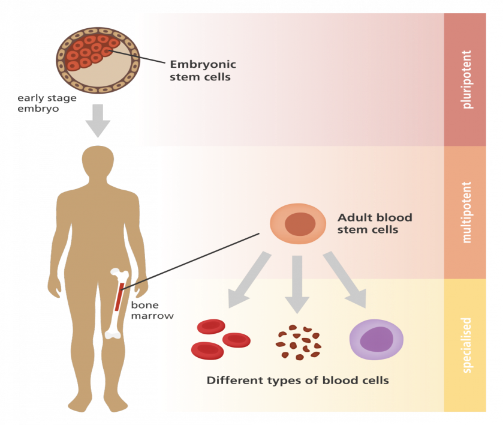

Common disease like tooth decay and gum disease can lead to tooth loss. Traditionally dentists have used crown, bridges and dentures to replace diseased teeth.
Dental Implants were one of the late 20th century’s largest innovations in dental treatment. But recent advances in stem cell research have revealed future where dental implants could become old technology.
Stem cell action contributes as a main factor to the capacity of self-renewal and differentiation of every organ and tissue. Tissue engineering therapies and stem cells are a promising way to achieve alveolar bone regeneration and solve large periodontal tissue defects and finally to substitute a lost tooth itself.
Stem cells are unspecialized cells that can differentiate into any other type of cells in the body. There are mainly two types of stem cells:
Embryonic Stem Cells differentiates to form three main germ layers: Ectoderm, mesoderm, and endoderm.
Adult Stem Cells have been characterized in different organs such as the brain, skin, gut, liver, teeth, testis, heart, and various tissues including bone marrow, blood vessels, peripheral blood and skeletal muscle.
So far, five various types of Dental Stem Cells have been isolated from permanent and deciduous teeth:
These Dental Stem Cells can be used for regenerating dental as well as non-dental tissues. It has been observed that the use of Stem cells from the apical papilla (SCAP) and Periodontal ligament stem cells (PDLSC) is an appropriate choice to provide functional tooth regeneration.
Dental pulp stem cells (DPSC) have a high potential to promote angiogenesis/vasculogenesis. Administration of DPSCs into the ischemic mouse model is associated with a high appearance of vessel formation.
In vivo studies show that induced Stem cells from exfoliated deciduous teeth (SHED) is able to form smooth and skeletal muscle cells. Also, SHED improves the muscular dystrophy in animal models. Dental pulp stem cells (DPSCs) were reported to repair the infarcted myocardium in rats with acute myocardial infarction.
Dental Stem Cells are appropriate candidates for regenerating periodontal tissues. Periodontal ligament stem cells (PDLSC) derived from Periodontal Ligament serve as the most suitable sources of Stem Cells used for periodontal therapy.
Dental pulp needs to be removed when it becomes infected, and this is particularly problematic for root pulp that requires endodontic (root canal) treatment. Dental pulp stem cells (DPSC) and Stem cells from the apical papilla (SCAP) isolated from the human third molars were seeded onto a canal space of root fragments in mice.
There has been significant progress in the use of stem cells in animal studies. Teeth have successfully grown at King’s College in London. Their research team combined human gum tissue and stem cells from mice teeth that undergo tooth formation. The cells themselves can seek out a blood supply from surrounding tissue to make a live tooth.
Over at Columbia University, one study has taken it to the next step. Here, researchers were able to guide stem cells to create a three-dimensional scaffold. The results showed that an anatomically complete tooth could grow in about 9 weeks.
The big question with all of these studies is to reproduce the results in humans. Of course, performing dentistry on rats was not without its challenges. While the dentin was incredibly similar to that which grows naturally, it isn't exactly the same as humans.
In the recent years, the field of dentistry has embellished its presence by taking major hikes in research and bringing them into practice. The current focus of research in regenerative dentistry is on the isolation of stem cells from dental tissues, and these researches have provided a good deal of evidence that oral and maxillofacial regions are the good sources of stem cells. In the present time, stem cell banks have gain excessive popularity and stem cells from the umbilical cord are mainly preserved in these banks for future use. Thus, the dental professionals should recognize the importance of obtaining stem cells during routine procedures as they can be stored for regeneration therapies in the future.